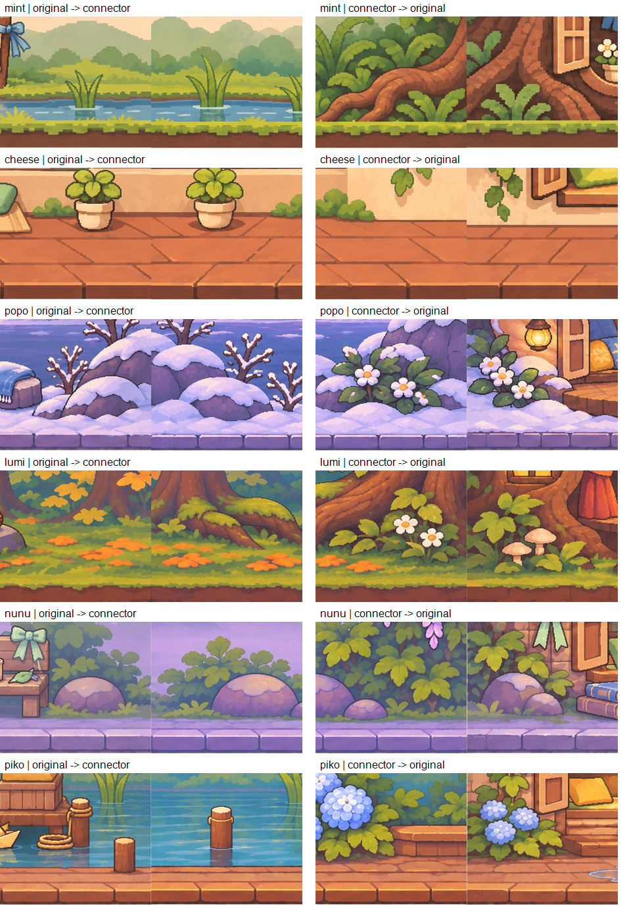

보정 전 비교판입니다. 최신 연결 PNG는 부분 보정 상태이며 이 비교판은 재생성하지 않았습니다. 최신 이미지의 접합 검수 완료를 뜻하지 않으며 loopReady=false를 유지합니다.
보정 전 검수 결과: 경계 보정 필요
왼쪽: 원본 → 연결 / 오른쪽: 연결 → 원본
위에서부터 라일 · 치즈 · 포포 · 루미 · 누누 · 피코
1:1 픽셀 발췌, 하단 정렬. 가운데 세로선에서 색면과 형태가 이어지는지 확인하세요.

최신 부분 보정 내역과 남은 작업은 검수 기록을 참고하세요. 게임 코드와 앱 자산은 이번 아트 게시에서 변경하지 않았습니다.